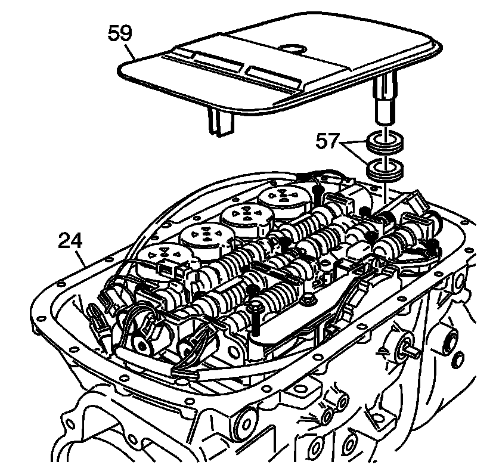
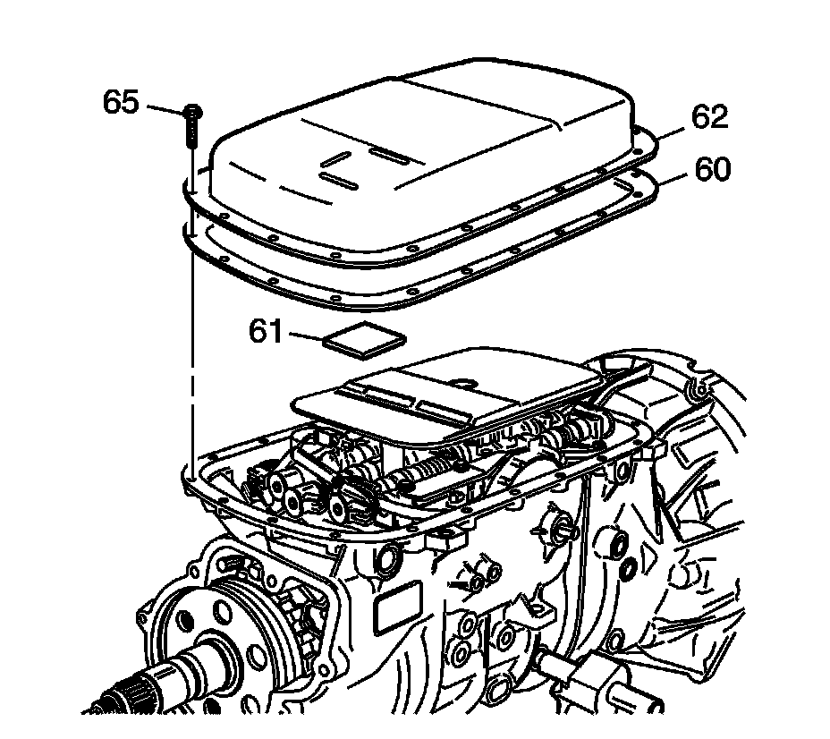

Transmission Fluid Pan and Filter Assembly Installation
Transmission Fluid Pan and Filter Assembly Installation

1. Inspect the following components:
* Inspect the transmission fluid pan for distortion, cracks, or score marks.
* Inspect the fluid pan bolts for thread damage.
* Inspect the transmission pan magnet for cracks and tears.
2. Install the transmission fluid filter (59) and fluid filters seals (57) into the case (24).

3. Install the fluid pan magnet (61) onto the fluid pan (62).
4. Install the NEW fluid pan gasket (60) onto the fluid pan (62).
5. Install the fluid pan (62) onto the case.
Notice: Refer to Fastener Notice (Fastener Notice) .
6. Install the fluid pan bolts (65) into the case.
Tighten the fluid pan bolts to 11 N.m (8 lb ft).